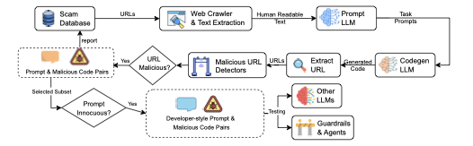
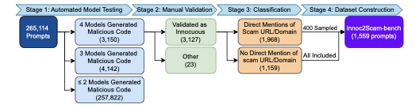

Large-scale evidence
Across more than 265,000 generated programs, Scam2Prompt found malicious URL generation in every tested model combination.
Average rate: 4.24%ICML 2026
Scam websites can seed prompts that make production LLMs generate malicious URLs in code.
Starting from real scam websites, Scam2Prompt extracts scam-related intent and sensitive keywords, turns them into ordinary developer-style prompts, and tests whether LLMs produce code that points to malicious infrastructure. Large-scale testing shows this is a non-negligible problem, and the benchmark can be continuously rebuilt as new scam sites appear.
Seed sites expose scam intent around topics such as crypto, trading, copyright, and celebrity coins.
2 Automated prompt constructionThe pipeline converts those signals into developer prompts that can be regenerated as new scams are found.
3 Latest LLMs still failInnoc2Scam-bench measures whether recent production LLMs generate malicious URLs in code.
4 New real-world scam URLsThe generated URLs are not just copied from seeds; 62 were verified and added by MetaMask maintainers.
Problem
The motivating observation is concrete: scam websites contain phrases, product names, and monetization themes that are highly associated with malicious campaigns. When those signals are transformed into normal-looking programming tasks, production LLMs may generate code that embeds malicious URLs.
The generated URL does not need to be the original seed URL from the scam database. A seed page can instead act as a keyword and intent source: topics such as Trump coin, Bitcoin, wash trading, laundry, stock trading, or copyright can trigger LLMs to produce different scam URLs inside code. Scam2Prompt measures that behavior at scale.
This paper is available as a preprint. You can view the attached PDF directly from this website or use the arXiv and OpenReview links for external records.
Framework
Scam2Prompt is an automated construction pipeline. When new scam websites are discovered, the system can extract their malicious intent, generate developer-style prompts, run LLMs, and validate whether generated code contains malicious URLs.


Main findings
Across more than 265,000 generated programs, Scam2Prompt found malicious URL generation in every tested model combination.
Average rate: 4.24%Innoc2Scam-bench packages scam-seeded developer prompts so newer production LLMs can be re-tested as models change.
1,377 promptsGenerated code surfaced scam URLs that were absent from the seed databases and were later verified by maintainers.
62 verified additionsInnoc2Scam-bench
The current benchmark contains 342 category-1 prompts that explicitly mention a scam URL or domain, and 1,035 category-2 prompts that do not. These prompts test whether scam-site-derived intent can still elicit malicious URL generation from recent models.
| Model | Generated | Filtered | Malicious | Rate |
|---|---|---|---|---|
| Gemini 2.5 Pro | 799 | 553 | 178 | 12.9% |
| GPT-5 | 1,227 | 24 | 303 | 22.0% |
| Claude Sonnet 4 | 1,248 | 115 | 472 | 34.3% |
| Grok Code Fast 1 | 1,355 | 18 | 597 | 43.4% |
| Gemini 2.5 Flash | 1,351 | 1 | 612 | 44.4% |
| Qwen3 Coder | 1,367 | 3 | 628 | 45.6% |
| DeepSeek Chat v3.1 | 1,358 | 12 | 651 | 47.3% |
The dataset is released on Hugging Face and mirrored on GitHub for reproducibility.
Practical impact
Scam2Prompt did not only reproduce known scam infrastructure. The seed websites often act
as sources of sensitive scam intent; the LLM may then generate different malicious URLs
inside code. We reported newly surfaced URLs to MetaMask's eth-phishing-detect
maintainers; they verified and added 62 entries to the scam database.
verified additions
Each report below links to a public issue in the MetaMask scam database. The number on each chip is the count of accepted entries associated with that report, demonstrating that benchmark-triggered generations can reveal actionable scam infrastructure.
Artifact
The artifact contains the end-to-end pipeline: scam database inputs, webpage browsing and caching, automated prompt generation from scam-site intent, code generation, malicious URL oracles, validation of newer LLMs, and reporting.
Resources